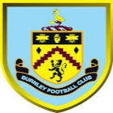

|  | Burnley FC |
| Ethnic | English |
| Job | English Football Club |
| Desc | xxxx |
Affiliation
| Location | City of Burnley |
| England |
- 2018 08 07
- Burnley have confirmed the signing of Joe Hart from Manchester City for a reported £3.5 million fee
2019 01 31 Retrieve
[Burnley have confirmed that Peter Crouch will join the club from Stoke City until the end of the 2018-19 season] The Clarets have added more England pedigree to their ranks with the capture of striker Peter Crouch. Crouch - who scored 22 times in 42 international appearances and becomes the seventh member of the Clarets’ squad to have been capped by England - joins Burnley from Stoke City on a deal until the end of the season. The 38-year-old, who will wear squad number 15 at Turf Moor, brings a wealth of Premier League experience following spells in the top flight with Aston Villa, Southampton, Liverpool, Portsmouth, Tottenham Hotspur and Stoke.
- 2019 06 13
- Burnley’s Premier League fixtures for the 2019-20 season have been released
- 2019 07 09
- Jay Rodriguez has left West Brom and returned to hometown club Burnley in a deal reportedly worth a figure rising to £10 million
- 2019 08 02
- Burnley have moved quickly to bring in Tom Heaton’s replacement, signing Bailey Peacock-Farrell from Leeds United for an undisclosed fee.
2020 04 05 Retrieve
[Burnley will run out of money by August] Burnley FC is keen to be transparent with supporters, staff and stakeholders and is therefore able to confirm that due to the continued suspension of Premier League games this presents some significant challenges for the football club.
Burnley FC are set to lose around £5 million in lost revenue from the remaining home games which in the event that the season finishes would be unlikely to be recouped owing to the likely prospect of these fixtures being played behind closed doors.
In addition, the Clarets face missing out cash payments from the Premier League of up to £45 million in broadcasting revenue and other items if the season is not finished. It is believed that other clubs could be looking at up to a £100m shortfall
2020 05 20 Retrieve
[Burnley’s assistant manager Ian Woan contracts virus] In line with strict Premier League requirements and following a positive test, Ian will now self-isolate for a period of seven days, with a view to being tested again week commencing Monday 25th May
2020 06 22 Retrieve
[White Live Matter, Burnley] Burnley Football Club strongly condemns the actions of those responsible for the aircraft and offensive banner that flew over The Etihad Stadium on Monday evening. We wish to make it clear that those responsible are not welcome at Turf Moor. This, in no way, represents what Burnley Football Club stands for and we will work fully with the authorities to identify those responsible and issue lifetime bans. The club has a proud record of working with all genders, religions and faiths through its award-winning Community scheme, and stands against racism of any kind. We are fully behind the Premier League’s Black Lives Matter initiative and, in line with all other Premier League games undertaken since Project Restart, our players and football staff willingly took the knee at kick-off at Manchester City. We apologise unreservedly to the Premier League, to Manchester City and to all those helping to promote Black Lives Matter
2020 06 25 Retrieve
[Jeff Hendrick rejects Burnley contract offer amid AC Milan interest] The Clarets have lodged their retained list with the Premier League, which confirms the departures of senior men Joe Hart, Aaron Lennon and Adam Legzdins, along with the news that midfielder Jeff Hendrick has rejected a new contract offer